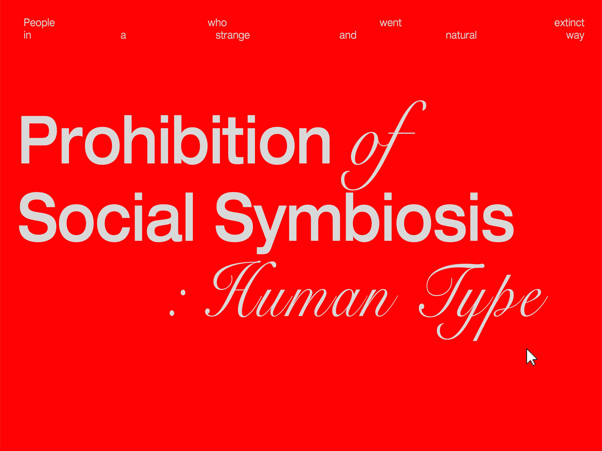
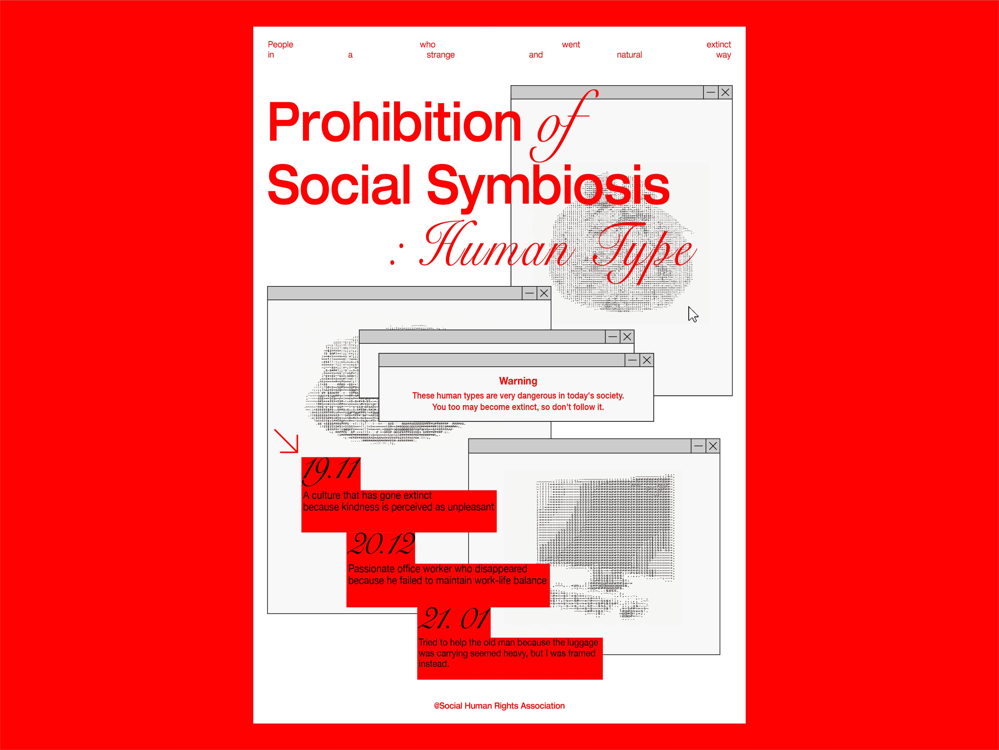
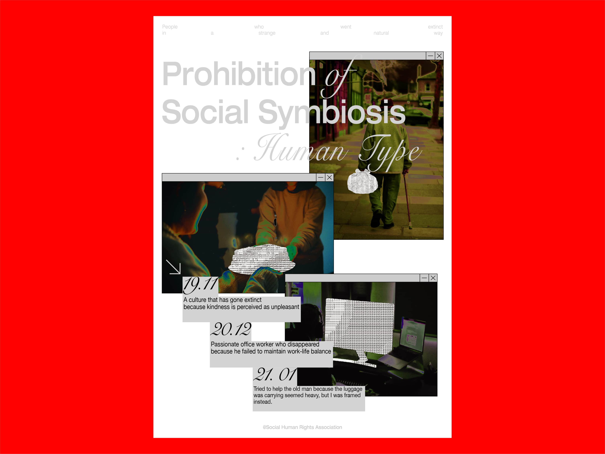
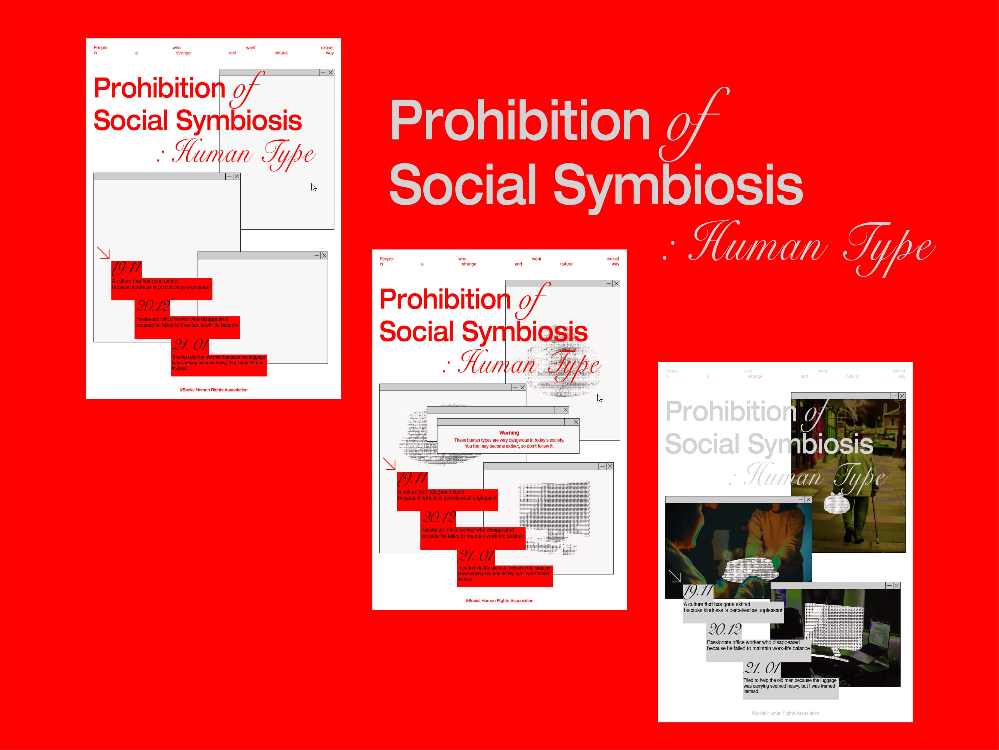
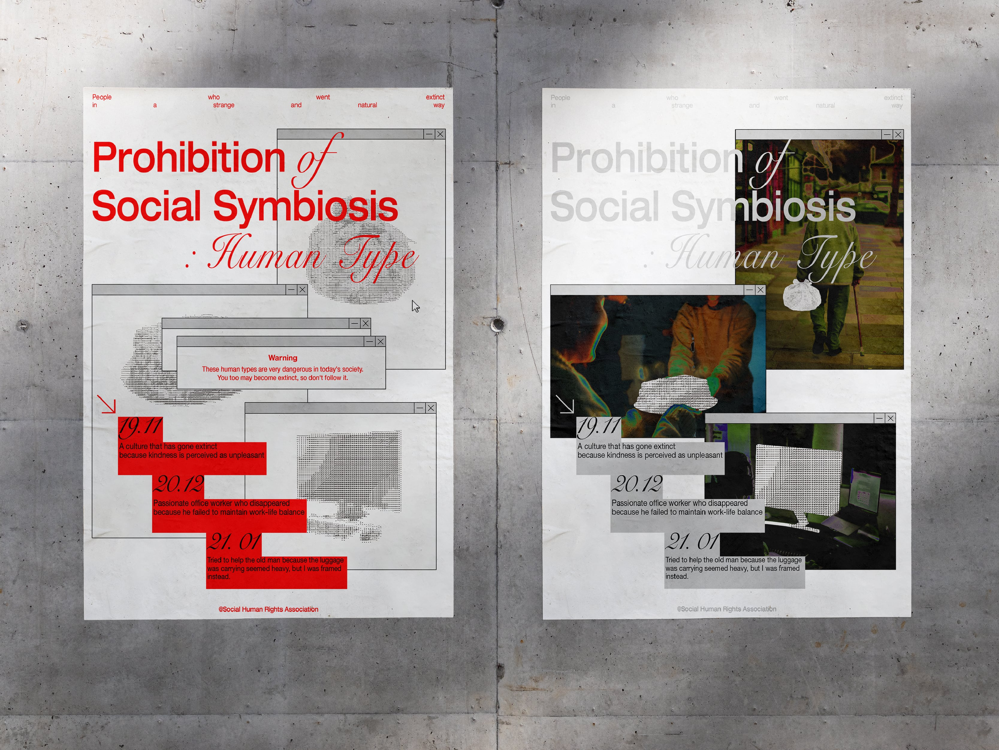
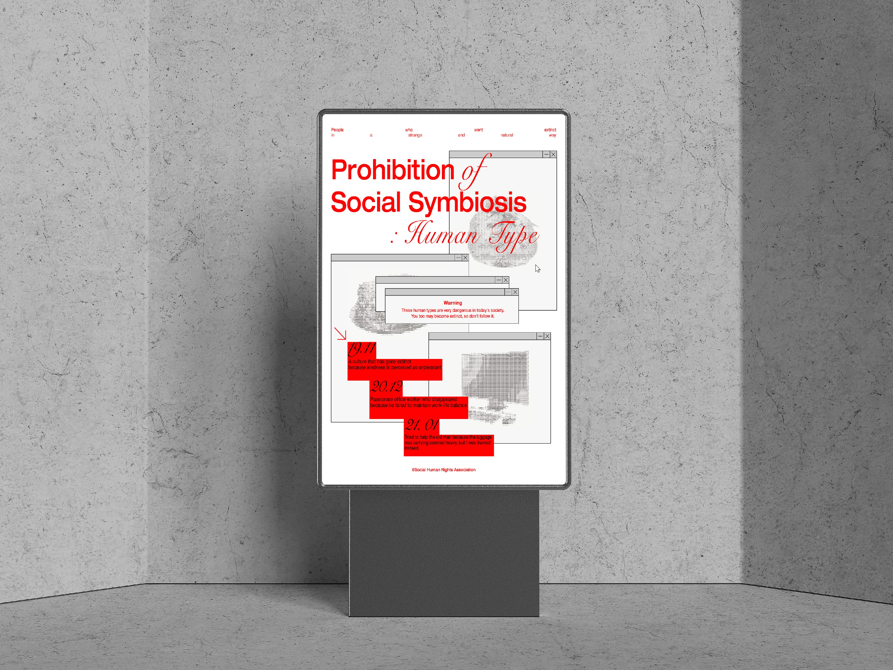
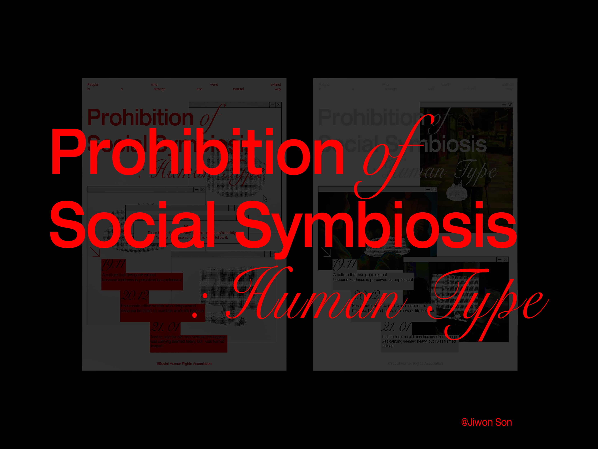

Prohibition of social symbiosis : Human type
사회적 공생 금지 : 인간유형
지금과 멀리 떨어진 미래에는 절대 공생할 수 없는 인간유형들이 있을 것이다. 2022년, 현재 우리 사회에는 개인주의가 확산되어 자신의 가치관, 성격 및 취향에 알맞는 삶을 살아가려고 한다. 우리는 워라벨(work-life balance)을 추구하고 무인 키오스크를 애용하며 택시를 탈 때 조차 대화없이 목적지에 도착하길 바란다. 또, 함부로 친절을 배풀었다가는 되려 오지랖의 누명을 쓰는 것이 일상이기에 끊임없이 도덕적 규범에 대한 의문이 이어진다.
그렇다면, 현재 우리 사회가 나아가고있는 이 ‘방향’은 바람직한가?
우리의 방향대로라면 지금과 멀리 떨어진 미래에는 절대 공생할 수 없는 인간 유형들이 있을 것이다. 현재는 공생하고 있지만 절대 사회에서 공생할 수 없는, 어쩌면 이미 멸종되어버린 사람들. 노인의 짐을 들어주는 젊은이, 이사떡 돌리는 이웃, 열정으로 회사에 남아 야근을 즐기는 신입사원. 한 때 함께 살았으나 지금은 박물관에서나 만나볼 수 있을 것만 같은 사람들을 기억하고자 우리의 ‘방향'과는 다른 인간 유형들을 소개한다.
‘방향'이 달랐다면 함께 공생할 수 있는 희먕이 있었을까?








Copyright ⓒ손지원 All Rights Reserved